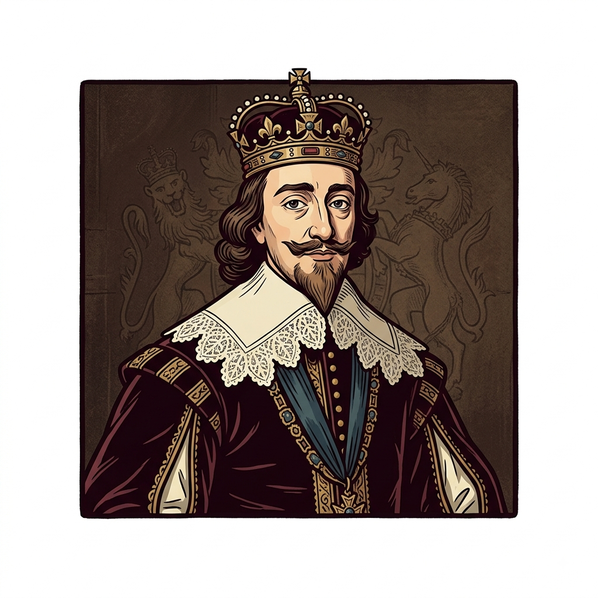

O Início da Crise: Rei x Parlamento
Por: Victor Matheus
O conflito entre o rei Carlos I e o Parlamento inglês começou quando o monarca tentou governar de forma absolutista, impondo impostos sem a aprovação parlamentar.
Fonte: História Viva